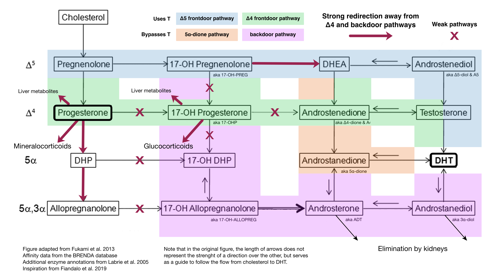
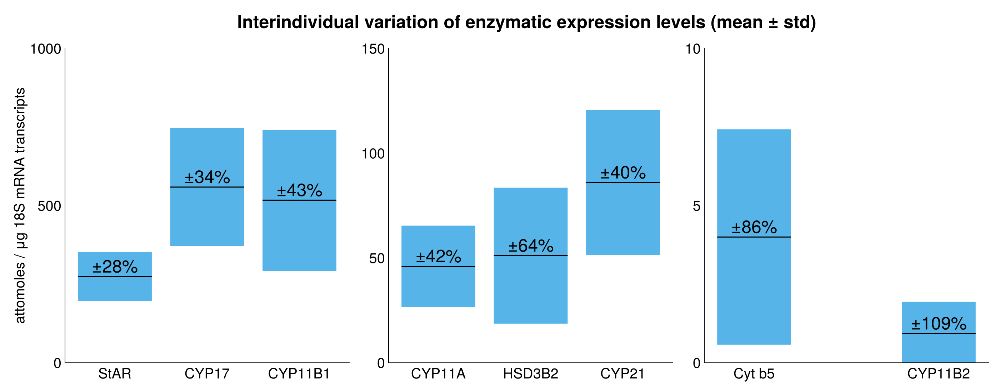
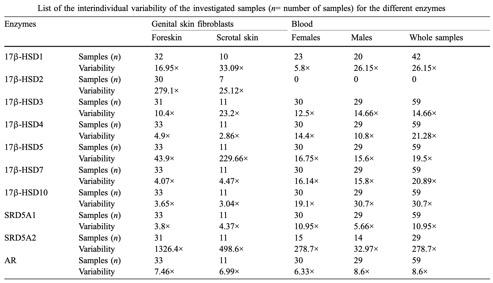
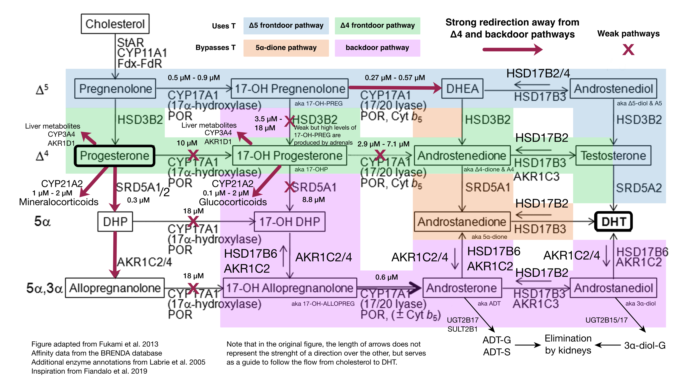
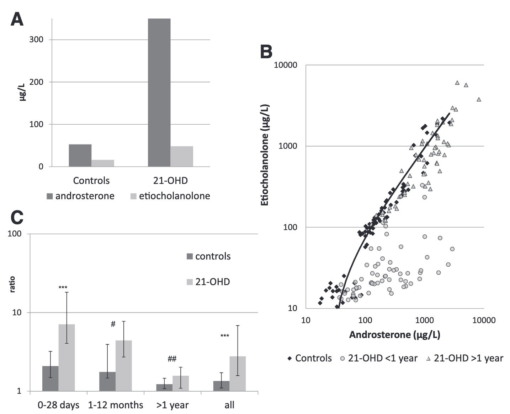

This post is a preprint and has not been reviewed (yet). If you would like to contribute a review, please get in touch!
The direct conversion of progesterone to DHT and other potent androgens is very rare in healthy individuals. Unlike in rodents and Tammar wallabies, the “backdoor pathway” for androgen synthesis does not occur to any significant extent in humans, even during progesterone supplementation. Exceptions to this rule are limited to specific conditions, such as non-classic congenital adrenal hyperplasia (ncCAH), where enzymatic deficiencies disrupt hormone metabolism, and during fetal development of male primary sexual characteristics. Claims of androgenic symptoms caused by progesterone are more adequately explained by its complex indirect relationship with adrenal regulation, insulin sensitivity, and existing variations in the expression levels of key enzymes across individuals.
Of the many steps necessary for the conversion of progesterone to DHT, several of the enzymes catalyzing each of those steps have very low affinities and catalytic efficiencies for progesterone and its derivatives. Instead, progesterone is quickly picked up by enzymes with much better affinity and preferentially flows towards the biosynthesis of allopregnanolone, responsible for progesterone’s sedative effects, various corticosteroids like aldosterone, or is extensively metabolized and eliminated by the adipose, liver, and kidneys. For the tiny amount that avoids this fate, there are several additional steps to go through before reaching DHT. Along the way, progesterone derivatives encounter similar conditions, namely low enzyme affinities, preferred redirections away from DHT, and the possibility of being metabolized, conjugated, and eliminated by the body. See Figure 1 for a graphical summary.
In short, the transformation of progesterone into DHT is a lengthy and inefficient process not favored by the body, except under specific conditions.
 Figure 1. Pathways responsible for androgens, and ultimately DHT biosynthesis. Red arrows in bold indicate directions where PROG and other C21 steroids preferably flow. Red x’s indicate weak pathways, all of which would be necessary for PROG to serve as precursor to a significant amount of DHT synthesis.
One situation in which progesterone supplementation could lead to androgenic symptoms, including those caused by DHT, is in the presence of congenital adrenal hyperplasia (CAH). CAH is a group of genetic disorders that disrupt steroid hormone production in the adrenal glands. The classical form is rare, often life-threatening, and typically detected in newborns. In contrast, the nonclassical form (ncCAH) is more common with an incidence rate of at least 1 in 1,000 and potentially as high as 1 in 200 and frequently goes undiagnosed for years, especially in milder cases. ncCAH can cause symptoms like premature puberty, excessive hair growth, acne, or irregular periods in people with ovaries, often overlapping with conditions like polycystic ovary syndrome (PCOS). In cis men, symptoms may be subtle or overlooked, as they may align with typical gender expectations. Trans feminine individuals may also face challenges, as symptoms of poor feminization despite hormone replacement therapy are often dismissed or misunderstood due to lack of awareness and biases in healthcare.
Both forms of CAH are caused by enzyme deficiencies, most commonly 21-hydroxylase deficiency (21OHD). This impairs the usual conversion of progesterone and related hormones into cortisol and aldosterone, and causes an accumulation and spillover into pathways that produce androgens, often resulting in symptoms of hyperandrogenism. Progesterone supplementation in individuals with ncCAH could worsen this imbalance, potentially turning a mild or asymptomatic case into one with clinically significant androgenic symptoms.
Finally, progesterone has a complex relationship with the hypothalamic-pituitary-adrenal (HPA) axis and insulin signaling, which regulate stress responses, immune function, salt and water balance, and glucose metabolism. It is a potent antimineralocorticoid and modulator of insulin and prolactin secretion, it rapidly accumulates in tissues, and is extensively metabolized into various steroid derivatives in the liver, adrenals, and adipose tissue, each with its own regulatory effects. Consequently, using progesterone non-orally (e.g., rectally or via intramuscular injection) continuously and in large doses carries the risk of disrupting hormonal and metabolic balances, even in individuals without enzymatic deficiencies. This disruption could lead to symptoms that may be mistakenly interpreted as signs of androgenic activity, but given the role of insulin in modulating adrenal response, androgen steroidogenic pathways, and the downstream inhibition of aromatase, progesterone might indirectly cause symptoms of PCOS-like hyperandrogenicity.
Emerging evidence suggests that a PCOS-like condition may exist in individuals without ovarian tissue, characterized by metabolic and hormonal abnormalities similar to those seen in ovarian PCOS, such as insulin resistance, dyslipidemia, hyperinsulinemia, and early-onset androgenetic alopecia (AGA). This condition is particularly prevalent in first-degree relatives of individuals with ovarian PCOS, indicating a potential genetic component. Early-onset AGA, defined as hair loss before the age of 35, has been proposed as a clinical marker of this condition, as it is frequently observed in families with a history of ovarian PCOS. Individuals without ovarian tissue who exhibit this condition often show elevated levels of LH, DHEA-S, 17OH-P, and prolactin, along with reduced levels of SHBG and FSH. Insulin resistance is a key feature, with studies showing that individuals with early-onset AGA and hormonal abnormalities similar to ovarian PCOS exhibit higher insulin resistance compared to those without such hormonal changes. While hyperandrogenism is a hallmark of ovarian PCOS, those without ovarian tissue and with this condition often have normal or even subnormal testosterone levels, suggesting that the clinical signs of hyperandrogenism, such as AGA, may result from the conversion of weaker androgens like DHEA-S into more potent forms in peripheral tissues.
While the diagnosis of ncCAH caused by 21OHD used to be difficult, recent research found 21-deoxycortisol to be a biomarker offering near-perfect diagnostic accuracy when using the more accurate and precise LC-MS/MS assay instead of immunoassays. Cases of ncCAH caused by 11OHD, fortunately much rarer, are likely to cause additional difficulties and require not only steroid panels but in-depth genetic analysis. PCOS-like hyperandrogenicity may indicate the presence of hyperinsulinemia, incipient insulin resistance, or a non-ovarian PCOS-like condition, in which case a glucose resistance test and possibly an 11-oxygenated androgen panel could be recommended.
Fortunately, interventions are available and relatively straightforward. In all cases, discontinuing progesterone supplementation is strongly recommended. For individuals who were previously asymptomatic, this step alone is often sufficient. For those who started progesterone to address unsatisfactory feminization outcomes and experienced a significant worsening of androgenic symptoms such as acne, increased body hair, and male pattern hair loss. For those without access to specialized care, dutasteride (0.5 mg/day) is the preferred treatment. If dutasteride is unavailable, bicalutamide (25-50 mg/day) or finasteride (1 mg/day) can serve as alternative options. In the very rare case of 11-hydroxylase deficiency, 5α-reductase inhibitors should be avoided. For individuals with access to specialized healthcare, we recommend seeking a formal diagnosis for potential adrenal disorders, which may lead to low-dose glucocorticoid therapy under the supervision of a medical professional, or for a PCOS-like disorder in which case metformin or inositol supplementation may be recommended. We strongly discourage attempting glucocorticoid therapy without proper medical oversight, as improper use, including at low doses and especially during long-term use, can lead to serious side effects, including immune suppression, bone density loss, metabolic disturbances, and dangers associated with abrupt discontinuation.
For an excellent and in-depth review of modern intracrine androgen biosynthesis theory, see Schiffer et al. (2018).
DHT is a more potent form of testosterone, exhibiting 2 to 3 times the affinity and potency at the androgen receptor (AR). Beyond the enzymes that catalyze and metabolize them, DHT and T differ not only in their quantitative potency at the AR but also qualitatively due to differences in their transactivation profiles (Askew et al., 2007; Bolduc et al., 2004; Deslypere et al., 1992; Di Vincenzo et al., 2023; Holterhus et al., 2002; Hsiao et al., 2000; Wu et al., 2011). Although the precise mechanisms remain unclear, these differences arise from the existence of selective androgen response elements (AREs) (Hsiao et al., 2000) and the differential recruitment of cofactors between AR-bound T and DHT caused by slight geometric differences in the conformational changes they induce. As a result, DHT and T do not activate the same genes in the same ways, and they do so differently across tissues.
DHT is not produced by the testes. Instead, it is synthesized in the liver and prostate through the 5α-reduction of T produced and released into circulation by the testes, as well as intracrinally using adrenal DHEA-S (Labrie, 1991; Labrie et al., 2005; Schiffer et al., 2018). Intracrinally synthesized DHT is extensively metabolized into 3α-androstanediol (3α-diol), which is then glucuronidated into 3α-androstanediol glucuronide (3α-ADG) and released into circulation for elimination by the kidneys. Only about 10% of intracrinally produced DHT exits the cell intact (Horton, 1992; Horton & Lobo, 1986).
In the absence of specific enzymatic deficiencies and outside of fetal male development (Fukami et al., 2013; Lee & Kim, 2022; Miller & Auchus, 2019; O’Shaughnessy et al., 2019; Sharpe, 2020), the backdoor pathway is not a significant contributor to DHT synthesis in humans (Luu-The, 2013). This is because while CYP17A1 has a preference for PROG/17OH-P in rodents (Brock & Waterman, 1999) and for allopregnanolone/17OH-ALLOPREG in Tammar wallaby (Wilson et al., 2003), it has an almost exclusive preference for pregnenolone/17OH-PREG in human (Fevold et al., 1989; Gonzalez & Guengerich, 2017), thus favoring the frontdoor and 5α-dione pathways.
In people without testicular androgens, serum T levels correlate poorly with levels of androgen metabolites (the obligate elimination products of all androgens) making them poor biomarkers of the total androgen pool, including DHT (Labrie et al., 2006). Measurement of the sum of androgen metabolites such as AST-G, AST-S, and 3α-diol-G is the only accurate serum method for measuring total androgen production and activity (Labrie et al., 2006).
Intracrine synthesis from adrenal precursors may contribute approximately 25-50% of total DHT in tissues, as evidenced by intra-prostatic DHT levels following castration (Mostaghel et al., 2007; Nishiyama et al., 2004; Page et al., 2006; Yoon et al., 2008) and the observed 59% decrease in total androgen metabolites (Bélanger et al., 1986; Labrie et al., 2009). Thus, while serum levels of T and DHT may correlate and drop to very low levels following interventions such as castration, hypothalamic-pituitary-gonadal (HPG) axis inhibition by GnRH analogues, progestins, or supraphysiological estradiol, this drop only indicates the decreased production by the liver and prostate from gonadal T as a precursor, and do not reflect the absence of local intracrine DHT synthesis in peripheral DHT-sensitive tissues like adipose tissue, skin, the prostate, hair follicles, and breast tissue using the adrenal precursor DHEA-S.
While the Δ4 and Δ5 frontdoor pathways are the primary sources of gonadal T in intact cis men, and by extension of circulating DHT produced in the liver and prostate, intracrine DHT synthesis mostly bypasses T and proceeds mainly via the 5α-dione pathway. This is supported by two key pieces of evidence (Luu-The, 2011):
Finally, a fact often overlooked concerns the presence of a tremendous amount of interindividual variation in the expression levels of key enzymes (see Figure 2 and Table 1) involved in the the biosynthesis of steroids at large including glucocorticoids, mineralocorticoids, androgens, 11-oxygenated androgens, and of the androgen receptor itself (Bassett et al., 2005; Hoppe, 2006; Hoppe et al., 2006). This variation naturally leads to differences in sensitivity and metabolism, whereby the interplay between various homeostasic processes and their fixed and variable set points (Kotas & Medzhitov, 2015) lead to different outcomes in steroid levels and androgenic effects between peoples despite the absence of any disorder or disease.
 Figure 2. Interindividual variation in enzymatic expression levels of key steroidogenic enzymes (data taken from Bassett et al. (2005)). Enzymes include those implicated in cholesterol side-chain cleavage (CYP11A, StAR), 17β-hydroxylase and 17,20-lyase/cytochrome b5 implicated in the transformation of C21 steroids (pregnanes) into androgens (CYP17), 21-hydroxylase and 11-hydroxylase implicated in corticosteroid and 11-oxygenated androgen metabolism (CYP11B1, CYP11B2, CYP21) (Turcu et al., 2018), and 3β-hydroxysteroid dehydrogenase implicated in the transformation of the adrenal precursor DHEA into A4, and of A5 into T.
 Table 1. Table from Hoppe et al. (2006) showing interindividual coefficient of variation in the expression level (transcript amount) of the androgen receptor and key enzymes implicated in androgen and estrogen biosythesis in genital and blood.
Let’s go down the rabbit hole of enzyme kinetics. This is sure to get confusing, but refer to Figure 1 for a graphical, yet complete qualitative summary of all the information presented in the following sections, and Figure 3 for additional quantitative details. The takeaway should be that during the biosynthesis of androgens the body conspires in various ways to prevent the conversion of progesterone into DHT.
In other words the conversion of progesterone to DHT is highly inefficient, and understanding enzyme affinity is key to explaining why. Affinity is often described using the Michaelis-Menten constant (KM), which represents the substrate concentration at which the reaction rate is half of the maximum rate (Vmax). KM has two key interpretations: (1) it reflects binding affinity, where a lower KM means tighter substrate binding, and (2) it partially indicates catalytic efficiency (kcat/KM), where a low KM allows high reaction rates even at low substrate concentrations. However, affinity is not the same as efficacy. An enzyme may bind a substrate tightly (high affinity) but convert it poorly (low efficacy), or vice versa. Since data for kcat is less readily available than for KM, we will mainly focus on the latter, although a complete discussion would have to include kcat (the turnover number) as well.
Most of the following has been synthesized from the BRENDA database of enzymes (Chang et al., 2021; Schomburg et al., 2000), the KEGG encyclopedia’s steroid biosynthesis pathways (Kanehisa, 2019; Kanehisa et al., 2025; Kanehisa & Goto, 2000), discussions from Labrie et al. (2005), and graphical elements from Fukami et al. (2013) and Fiandalo et al. (2019).
For the vast majority of us, PROG doesn’t make it to 17OH-P, the entry point to the backdoor pathway, and one of the entry point to the Δ4 frontdoor pathway to androgen biosynthesis. Those are the only two ways through which PROG could eventually be converted to DHT. Instead, it gets quickly funneled into mineralocorticoid biosynthesis by 21-hydroxylase, or towards the synthesis of allopregnanolone by 5α-reductase (Luu-The, 2013). Given that 5α-reductase type 2 is strongly expressed in the liver, the latter scenario is especially relevant when PROG is taken orally and goes through first-pass metabolism. The strength of this redirection comes from the fact that the enzyme which catalyzes the reaction from PROG to 17OH-P, 17α-hydroxylase (encoded by CYP17A1), has a very low affinity for PROG compared to other immediate catalysts, roughly 10 times less than that of 21-hydroxylase and 30 times less than that of 5α-reductase.
There is still a small amount that does make it to 17OH-P, but new problems immediately emerge. At that point, 17OH-P can either:
The affinity of 21-hydroxylase for PROG is approximately 10 times higher than that of 5α-reductase and 5 times higher than that of 17,20-lyase. Unless someone has specific enzymatic deficiency, such as 21-hydroxylase deficiency (21OHD) or 11-hydroxylase deficiency (11OHD), only a minute amount of 17OH-P derived directly from PROG becomes either androstenedione (A4, towards frontdoor) or 17OH-DHP (towards backdoor).
Given the terrible affinity of 17α-hydroxylase for PROG, the main contributor to the levels of 17OH-P necessary for glucocorticoid biosynthesis is 17α-hydroxypregnenolone (17OH-PREG) derived from pregnenolone (PREG). 17OH-PREG is incidentally the main precursor to all androgens through the Δ5 frontdoor pathway. The conversion of 17OH-PREG into 17OH-P (towards either the glucocorticoid pathways or the backdoor pathway) is driven by HSD3B1/HSD3B2, and into DHEA along the Δ5 frondoor pathway by 17,20-lyase. The affinity of 17α-hydroxylase for PREG is 10 to 20 times greater than its affinity for PROG, and the affinity of 17,20-lyase for 17OH-PREG is 10 to 100 times greater than that of HSD3B1/HSD3B2.
At this point, only a minuscule amount has made it to 17OH-DHP, where it can be converted to 17α-hydroxy-allopregnanolone (17OH-ALLOPREG) by certain aldo reductases and cross over through the backdoor pathway into androsterone (AST). The last steps are therefore
The steps from AST to 5α-dione and from 3α-diol to DHT go ‘against the flow,’ opposite to the typical androgen elimination pathways. These steps depend strongly on the redox state of the cell and the presence of cofactor concentration gradients, rather than the relative concentrations of steroids (Agarwal & Auchus, 2005).
Both AST and 3α-dione can be glucuronidated by UDP-glucuronosyltransferase (UGT2B15/17) into androsterone glucuronide (AST-G) and 3α-ADG. Additionally, AST can be sulfated by sulfotransferase (SULT2B1) into androsterone sulfate (AST-S). Sulfate and glucuronide conjugates are more water-soluble than unconjugated steroids and are readily eliminated by the kidneys.
See Figure 3 for a dense summary of the previous discussion.
 Figure 3. C21 steroid pathways responsible for the biosynthesis of C19 androgen precursors with affinities, enzymes, and diversionary pathway. Note the presence of one to two orders of magnitude difference in affinity beween strong and weak pathways.
Classical congenital adrenal hyperplasia (CAH) is a rare and life-threatening disorder usually detected in newborns using a Gurthie test and occurs in 1 in 10,000 to 1 in 20,000 live births. On the other hand, nonclassical congenital adrenal hyperplasia (ncCAH) is relatively common and is estimate to occur in at least 1 in 1,000 and up to 1 in 200 persons (Merke & Auchus, 2020). ncCAH can present with various degrees of severity. In milder cases, it often goes undetected and untreated for most of someone’s life unless it causes noticeable and distressing symptoms such as hyperandrogenism and hirsutism, or persistent acne. Establishing a differential diagnostic is complicated because of the overlap with PCOS symtpoms (Auchus, 2015; Sumińska et al., 2020; Yesiladali et al., 2022) and with other disorders known to cause various forms of androgen excess (Heijboer & Hannema, 2023). These disorders are likely to be overlooked in cis men for whom manifestations of hyperandrogenism do not raise any alarm and align with gender expectation, but also in transfeminine people due to a lack of awareness and to the unfortunate amount of biases and blind spots in standards of care and the medical community at large. For transfeminine people, such symptoms may lead to poor feminization outcome despite the use of HRT and are often simply dismissed as regrettably natural and expected, mysterious and intractable, or imaginary and stemming from impatience, anxiety, and gender dysphoria.
In CAH and ncCAH caused by 21-hyroxylase deficiency (21OHP), mutations in the gene CYP21A2 coding for the enzyme 21-hydroxylase lead to a partial reduction (ncCAH) or a complete reduction (CAH) of the efficiency with which progesterone (PROG) is metabolized into aldosterone and 17α-hydroxyprogesterone (17OH-P) into cortisol. Impaired aldosterone and cortisol synthesis lead to the loss of negative feedback on the hypothalamic-pituitary-adrenal axis and therefore to the stimulation of ACTH secretion and eventually to adrenal overactivity and hyperplasia. The resulting increase in the synthesis of corticosteroid precursors by overactive adrenals in the absence of efficient catalysis by 21-hydroxylase causes accumulation of high levels of PROG and 17OH-P and to the deflection of catalysis towards pathways that are usually less favored, all of which increase the total pool of androgens in one way or another and can lead to symptoms of hyperandrogenism.
For an excellent and in-depth review of congenital adrenal hyperplasia, please refer Claahsen et al. (2021).
In the context of 21OHD, progesterone supplementation can cause progesterone pooling, as it cannot enter the mineralocorticoid pathways as readily or at all in the classical case. This pooling can divert progesterone into several metabolic pathways, each with significant consequences:
Fortunately, interventions are available and relatively straightforward. Discontinuing progesterone supplementation is strongly recommended. For individuals who were previously asymptomatic, this step alone is often sufficient. For those who started progesterone to address unsatisfactory feminization outcomes and subsequently experienced worsening androgenic symptoms (e.g., acne, increased body hair, or male pattern hair loss). For those without access to specialized care, dutasteride (0.5 mg/day) is the preferred treatment. If dutasteride is unavailable, bicalutamide (25-50 mg/day) or finasteride (1 mg/day) can serve as alternatives. For individuals with access to specialized healthcare, we recommend seeking a formal diagnosis for potential adrenal disorders, which may lead to low-dose glucocorticoid therapy under medical supervision (Carmina et al., 2017; Trapp & Oberfield, 2012). Self-administered glucocorticoid therapy is strongly discouraged, as improper use, even at low doses or over the long term, can lead to serious side effects, including immune suppression, bone density loss, metabolic disturbances, and risks associated with abrupt discontinuation such as adrenal crises which can be life-threatening (Baker, 2021).
Diagnostic of ncCAH typically relies on a combination of family history, precocious puberty, ACTH stimulation test, genetic testing, and measurements of adrenal steroids such as 17OH-P, 11-deoxycorticosterone, 11-deoxycortisol, DHEA-S, and urinary metabolites. Milder cases can be asymptomatic or present with steroid and metabolite levels at or slightly above the higher end of the reference range despite androgenic symptoms (Auchus, 2015; Kamrath et al., 2012; Speiser et al., 2018). While increased activation of the backdoor pathway has been detected in patients with 21OHD through urinary metabolite analysis (Kamrath et al., 2012; Sumińska et al., 2020), the presence of backdoor conversion is insufficient as a diagnostic tool due to its poor discriminative power. Nonetheless, the discovery of the use of the ratio of ethiocolanolone to aldosterone (see Figure 4) offers a rare and direct glimpse at the presence of backdoor conversion and is interesting in its own right.
 Figure 4. The urinary etiocholanolone:aldosterone ratio in 21OHD patients shows an overall shift towards higher aldosterone concentrations, especially in young patients, when compared to controls. Notice that outside of newborns, absolute levels show a substantial overlap with those seen in controls when looked at in isolation. Figured reproduced from Kamrath et al. (2012).
The lack of definitive phenotypic features in ncCAH with 21OHD and hyperandrogenism motivated the search for better and simpler diagnostic criteria. Several groups converged on the use of 21-deoxycortisol (21DF) (Costa-Barbosa et al., 2010; Held et al., 2022; Ng et al., 2023; Oriolo et al., 2020; Turcu et al., 2020; Watanabe et al., 2022), alone or in combination with other parameters, as an excellent biomarker with both high sensitivity (low rate of false-negatives, high probability of yielding a positive result in the presence of ncCAH), and high specificity (low rate of false-positives, high probability of yielding a negative result in the absence of ncCAH) (see Sensitivity and specificity). 21DF is the immediate metabolite of the transformation of 17OH-P by 11-hydroxylase (CYP11B1/2) and a precursor to 11-hydroxyandrostenedione (11OH-A4) and therefore all other 11-oxygenated androgens (Kamrath et al., 2018; Turcu et al., 2018) under the action of 17,20-lyase. It is the fourth and less known steroid derivative of 17OH-P apart from androstenedione (from 17,20-lyase), 11-deoxycortisol (from 21-hydroxylase) and 17α-hydroxy-dihydroprogesterone (17OH-DHP, from 5α-reductase).
In term of specific diagnostic criteria
Costa-Barbosa et al. (2010) found that in 21-HTZ (heterozygous carriers of one allele of 21OHD, subclinical/asymptomatic ncCAH)
Turcu et al. (2020) using LC-MS/MS found
Oriolo et al. (2020) identified
Ng et al. (2023) found using LC-MS/MS
Watanabe et al. (2022) found that combining 21DF, 11-deoxycortisol/17OH-P, and (A4 + 17OH-P)/cortisol achieved 100% sensitivity and 92% positive predictive value.
Held et al. (2022) identified a 21DF cutoff of 85 ng/dL (2.5 nmol/L) with a 92% positive predictive value.
11β-Hydroxylase deficiency (11OHD) is the second most common form of congenital adrenal hyperplasia (CAH), accounting for approximately 5-8% of all CAH cases, with an estimated incidence of 1 in 100,000 to 1 in 200,000 live births in non-consanguineous populations (New, 2003; Yildiz et al., 2021). 11OHD is caused by mutations in the CYP11B1 gene, which encodes the enzyme mainly responsible for converting 11-deoxycortisol to cortisol and 11-deoxycorticosterone (DOC) to corticosterone, P4 to 11β-hydroxyprogesterone, 17OH-P to 21-deoxycortisol, and also A4 and T into their 11-oxygenated androgen counterparts 11OH-A4 and 11OH-T. The deficiency leads to a buildup of precursor steroids, including DOC, which has mineralocorticoid activity, and adrenal androgens. The severity with which mutations in CYP11B1 impair the efficacy of its 11β-hydroxylase action gives rise to a spectrum of clinical manifestations ranging from the more severe classic form (c11OHD) to milder nonclassical form (nc11OHD) (Menabò et al., 2014; New, 2003; Yildiz et al., 2021).
Classic 11OHD is characterized by hypertension, ambiguous genitalia in females, and hyperandrogenism in both sexes. Hypertension, a hallmark of c11OHD, results from the accumulation of DOC, which activates the mineralocorticoid receptor, leading to sodium retention and volume expansion. This is a key feature that distinguishes 11OHD from 21OHD, which typically presents with salt-wasting due to aldosterone deficiency (New, 2003; Yildiz et al., 2021). Females with c11OHD are often diagnosed at birth due to ambiguous genitalia, while males may present later in childhood with signs of precocious pseudopuberty, accelerated growth, and advanced bone age. Untreated c11OHD can lead to short adult height often falling 2-3 standard deviations or more below the population mean (Yildiz et al., 2021).
Non-classical 11OHD is a milder form of the disorder, with symptoms typically appearing later in childhood or adolescence. Unlike c11OHD, nc11OHD does not present with ambiguous genitalia or hypertension, making it harder to diagnose. Patients may exhibit premature pubarche, hirsutism, acne, menstrual irregularities, and infertility, all symptoms that overlap with ncCAH due to 21OHD (Menabò et al., 2014; Yildiz et al., 2021). The incidence of nc11OHD is less well-defined, but it is thought to be rarer than the classic form. Some cases may be asymptomatic or present with very mild symptoms, escaping clinical attention unless steroid profiling or genetic testing is performed (Yildiz et al., 2021). The milder phenotype in nc11OHD is attributed to residual enzyme activity, with some mutations retaining 5-10% of normal function and thus partial cortisol synthesis and less severe androgen excess (Menabò et al., 2014).
Diagnosis of 11OHD relies on steroid profiling, particularly the measurement of 11-deoxycortisol, DOC, and A4, which are elevated in both classic and nonclassic forms, and 11-oxygenated androgens may be significantly lower (Yildiz et al., 2021). As discussed earlier, 21OHD is characterized by elevated levels of 17OH-P, 21DF, and 11-oxygenated androgens, which are not typically observed in 11OHD (New, 2003; Turcu et al., 2020; Yildiz et al., 2021). However, it remains unclear whether hyperandrogenism in this condition could partially arise from backdoor androgen conversion. On one hand, the absence of elevated 17OH-P might suggest that such conversion is not occurring. On the other hand, the presence of elevated A4 points to a spillover effect into the Δ4 pathway. Given that 17OH-P serves as an entry point for both pathways, it is plausible that this spillover could extend to the backdoor pathway as well. The 11-deoxycortisol/cortisol ratio is a key diagnostic marker, with values >2.2 indicating n11OHD, values <1.5 suggesting nc11OHD, and values <0.1 indicating absence of 11OHD, reaching 100% specificity (Yildiz et al., 2021). ACTH stimulation tests and genetic testing for CYP11B1 mutations are essential for confirming the diagnosis and differentiating 11OHD from other forms of CAH. Like 21OHD, treatment for both c- and nc11OHD involves glucocorticoid replacement to suppress ACTH-driven androgen production and monitoring to avoid over-replacement, which can exacerbate growth impairment and metabolic complications (New, 2003; Yildiz et al., 2021).
In cases of 11OHD, progesterone supplementation may lead to significant accumulation and pooling of DOC and progesterone, with spillover into 17OH-P, subsequently increasing 11-deoxycortisol levels. To counteract this, the body may upregulate 5α-reductase, a key clearance pathway for 4-ene-3-one corticosteroids (Bloem et al., 2013; Kanehisa, 2019; Kanehisa et al., 2025; Kanehisa & Goto, 2000; Nasiri et al., 2015). While speculative, this upregulation could enhance activity through the 5α-dione pathway and increase the direct conversion of adrenal precursors into DHT, potentially exacerbating androgenic symptoms.
Out of caution, dutasteride and finasteride might be contraindicated in these cases, as blocking 5α-reductase could further exacerbate DOC and 11-deoxycortisol accumulation, potentially leading to metabolic complications such as hypertension or electrolyte imbalances. In such scenarios, bicalutamide may be a preferable alternative if residual androgenic symptoms persist after discontinuation.
Polycystic Ovary Syndrome (PCOS) is a prevalent endocrine and metabolic disorder affecting 6-15% of people with ovaries of reproductive age, characterized by hyperandrogenism, ovulatory dysfunction, and polycystic ovarian morphology (Aversa et al., 2020). It is a heterogeneous condition with two main phenotypes: the overweight/obese phenotype (80% of cases) and the lean phenotype, which is often underdiagnosed due to milder symptoms. Symptoms, including menstrual irregularities, hirsutism, acne, and alopecia, typically emerge during adolescence and are driven by hyperandrogenism and exacerbated by insulin resistance (IR) and hyperinsulinemia, which also contribute to metabolic complications like type 2 diabetes mellitus (T2DM), dyslipidemia, and non-alcoholic fatty liver disease (NAFLD) (Aversa et al., 2020). Additionally, PCOS is linked to cardiovascular risks and low-grade chronic inflammation, further complicating its metabolic profile (Aversa et al., 2020). Diagnosing PCOS is challenging due to varying clinical presentations and differing diagnostic criteria (NIH, Rotterdam-ESHRE/ASRM, AES), which focus on hyperandrogenism and ovarian dysfunction but often overlook metabolic abnormalities, leading to underdiagnosis, particularly in lean people (Aversa et al., 2020). In recent years, and parallel to these clinical approaches, biochemical, genetic, and genomic evidences have started to shed additional insights on PCOS subtyping (Dapas et al., 2020; Dapas & Dunaif, 2022).
At the core of PCOS pathophysiology are two interconnected factors which reinforce each others: hyperandrogenism and IR-induced hyperinsulinaemia. This link exists due to the fact that adrenal cells, ovarian theca cells, and ovarian granulosa cells (the principal contributors to steroid biosynthesis in people with ovaries) retain sensitivity to insulin signalling while the rest of the body grows increasingly insulin-resistant, further exacerbating compensatory hyperinsulinaemia.
In the following sections we will spend a significant amount of time reviewing this relationship as it will prove to be the key to understanding a potentially important link between progesterone and androgenic symptoms.
The interplay between hyperinsulinemia and hyperandrogenism in PCOS is rooted in insulin’s ability to directly amplify adrenal and ovarian steroidogenesis. Early studies demonstrated that hyperinsulinemia potentiates ACTH-stimulated adrenal androgen production, with hyperandrogenic people with PCOS showing elevated 17OH-PREG, 17OH-P, and DHEA during hyperinsulinemic clamps (Moghetti et al., 1996). This effect is mechanistically mirrored in adrenal cells, where insulin and IGF-I upregulate CYP17A1 and HSD3B2 mRNA (key enzymes for androgen synthesis) independently of ACTH or cAMP (Kristiansen et al., 1997). IGF-1 and IGF-2 further enhance ACTH responsiveness in fetal adrenal cells, increasing cortisol and DHEA-S via upregulated CYP11A1 and CYP17A1 (Mesiano et al., 1997). Moreover, people with PCOS and elevated DHEA-S exhibit greater net maximal and overall responses of DHEA and A4 to ACTH stimulation compared to controls, but no alteration in pituitary responsiveness to CRH (Azziz et al., 1998). In line with these results, hyperinsulinemia in hyperandrogenic people with PCOS amplifies ACTH-stimulated adrenal steroidogenesis, increasing 17OH-PREG and 17OH-P levels and urinary C19 and C21 steroid metabolites, without altering cortisol or androgen responses (Tosi et al., 2011). Insulin also appears to stimulate 5α-reductase activity, enhancing both glucocorticoid and androgen pathways (Tosi et al., 2011). Note that variants in CYP17A1 and HSD11B1 show no significant association with PCOS or with quantitative traits of PCOS (Chua et al., 2012), indicating that some of those steroidogenesis alterations are likely the result of distal genetic and metabolic factors rather than mutations in these two genes.
One of the clearest indicators of the adrenal glands’ contribution to hyperandrogenism in PCOS is the finding of markedly elevated levels of 11-oxygenated adrenal androgens (Turcu et al., 2018) in affected individuals. In fact, they are the main androgens in both obese and non-obese people with PCOS, contributing to 53% of total circulating androgens vs 44% in controls (O’Reilly et al., 2016). These include 11OH-A4 (2x increase), 11K-A4 (4x increase), 11OH-T (2x increase), and 11K-T (1.6x increase). Furthermore, serum 11OH-A4 and 11K-A4 correlate significantly with markers of insulin resistance (O’Reilly et al., 2016), and urinary AST and etiocholanolone were found to be roughly twice as high in addition to their AST:etiocholanolone ratio being elevated (1.17 vs 0.88 in controls) (O’Reilly et al., 2016), suggesting increased activation of the backdoor pathway (Kamrath et al., 2012). In a model of PCOS adipocytes, insulin induces AKR1C3 (HSD17B5) catalyzing the conversion of 11-oxo,17-keto androgens into 11-oxo,17-hydroxy (e.g. 11K-A4 into 11K-T) (Paulukinas et al., 2022) and the protective role of HSD11B1 in transforming 11K-T, a strong androgen, back into the much weaker 11OH-T (Paulukinas et al., 2022). People with severe IR but without PCOS show a similar pattern of elevated 11-oxygenated androgens (2.9x higher 11OH-A4, 2.4x higher 11K-A4, 3.6x higher 11K-T) mediated by adrenal insulin signalling which is supported by its absence in those for whom an intrinsic dysfunction of the insulin receptor is the cause of IR (Walzer et al., 2022). Analysis of urinary metabolites in people with PCOS reveals the upregulation of CYP21A2, CYP11B1, HSD11B2, and the downregulation of HSD11B1 and aromatase (Dhayat et al., 2018). This aligns with the previous results showing elevated 11-oxygenated androgens. Indeed, upregulation of CYP11B1 enhanced the conversion of androgens into their 11-hydroxy derivatives, and enhancement of HSD11B2 and downregulation of HSD11B1 implies that the transformation of 11-hydroxy androgens into 11-keto is subsequently enhanced. Further exacerbation of the synthesis of the two most potent 11-oxygenated androgens (11K-T and 11K-DHT) follows from the upregulation of SRD5A1 and AKR1C3 as previously described. This is significant given that 11K-T and 11K-DHT possess equivalent induction at 1 nM (Storbeck et al., 2013), as well as efficacy (maximum effect) and potency (concentration at 50% maximum effect) (Pretorius et al., 2016) (but see Rege et al. (2013)) at the AR than their non-oxygenated counterparts.
The liver, remaining insulin-resistant, contributes to impaired synthesis of sex hormone-binding globulin (SHBG), resulting in elevated systemic levels of free testosterone beyond the localized effects in ovarian and adrenal tissues (Wallace et al., 2013). This phenomenon is further supported by the effects of metformin in people with PCOS: treatment reduces hyperinsulinemia, lowers plasma free testosterone, and decreases ovarian CYP17A1 activity, as demonstrated by a diminished 17OH-P response to hCG stimulation, and these changes are accompanied by increased SHBG levels and improved insulin sensitivity (Marca et al., 2000).
In the ovary, insulin’s role is equally significant. Insulin stimulates testosterone biosynthesis in PCOS thecal cells via its own receptor, as shown by blockade with insulin receptor antibodies (Nestler et al., 1998). This insulin-specific effect is mediated by chiro-inositol-derived signaling molecules (e.g., INS-2), which amplify androgen production while leaving LH/hCG pathways intact (Nestler et al., 1998). CYP17A1, which is the rate-limiting enzyme for androgen synthesis, exhibits 4-fold higher promoter activity in PCOS theca cells under both basal and cAMP-stimulated conditions (Wickenheisser et al., 2000), a phenomenon exacerbated by insulin’s activation of the PI3-kinase pathway, which enhances 17α-hydroxylase activity (Munir et al., 2004). Insulin further amplifies androgenicity by upregulating 5α-reductase (SRD5A1) in granulosa cells via Akt signaling, increasing 5α-reduced androgens that impair follicular development (Kayampilly et al., 2010).
While insulin directly stimulates steroidogenic enzymes, it concurrently disrupts inositol metabolism, creating a self-reinforcing cycle of hyperandrogenism. Seminal studies by Heimark et al. (2014) and Unfer et al. (2014) revealed that hyperinsulinemia drives excessive epimerization of myo-inositol (MYO) to D-chiro-inositol (DCI) in ovarian tissues, collapsing the MYO:DCI ratio from 100:1 in healthy follicles to 0.2:1 in PCOS (Heimark et al., 2014; Unfer et al., 2014). This “DCI paradox”, conjectured by Carlomagno et al. (2011) a few years prior, reflects insulin’s dual role: while inducing peripheral insulin resistance, it paradoxically enhances ovarian insulin sensitivity, upregulating epimerase activity and depleting MYO, a critical mediator of FSH signaling and follicular maturation (Heimark et al., 2014; Unfer et al., 2014).
DCI’s downstream effects compound insulin’s pro-androgenic actions. Although DCI improves insulin sensitivity, it suppresses CYP19A1 (aromatase) and CYP11A1 expression, reducing estrogen synthesis while leaving androgen production unchecked (Sacchi et al., 2016). Insulin, acting as a co-gonadotropin, further amplifies steroidogenic gene expression (e.g., CYP11A1, IGF-1R) in the presence of FSH/LH, but this is counterbalanced by DCI’s inhibitory effects (Sacchi et al., 2016). The net result is a milieu favoring androgen accumulation, as seen in clinical studies where DCI supplementation elevates testosterone and DHEA while lowering estrogens (Monastra et al., 2021; Nordio et al., 2021), and conversely the success of MYO supplementation as an safe and effective treatment capable of restauring menstrual cyclicity, response to gonadotropins, and reduce hyperandrogenic symptoms in PCOS patients (Greff et al., 2023).
There is growing evidence to suggest that a “male”/non-ovarian equivalent of PCOS may exist, characterized by metabolic, and hormonal abnormalities similar to those seen in typical PCOS such as insulin resistance, dyslipidemia, hyperinsulinemia, as well as a high prevalence of early-onset androgenetic alopecia (AGA) (Aversa et al., 2020; Brock & Waterman, 1999; Cannarella et al., 2018; Di Guardo et al., 2020; Lenarcik et al., 2011). This is especially prevalent in first degree male relatives, particularly brothers, and suggests that PCOS may have a genetic component that affects both sexes (Lafci et al., 2024; Lenarcik et al., 2011; Lunde et al., 1989; Yilmaz et al., 2018). Early-onset AGA, defined as hair loss before the age of 35, has been proposed as a clinical marker of the non-ovarian PCOS equivalent, as it is frequently observed in families with a history of PCOS in addition a hormonal profile typically associated with ovarian PCOS (Dušková et al., 2004).
This profile includes elevated levels of LH, DHEA-S, 17OH-P, and prolactin, alongside decreased levels of SBHG and FSH (Cannarella et al., 2017; Di Guardo et al., 2020; Dušková et al., 2004; Legro et al., 2002; Sanke et al., 2016). Insulin resistance is a key feature, with studies showing that people with early-onset AGA and hormonal abnormalities similar to PCOS exhibit higher insulin resistance compared to those without such hormonal changes. Lower SHBG levels have been associated with impaired glucose metabolism and may serve as a marker for insulin resistance and hyperglycemia in these people. While hyperandrogenism is a hallmark of ovarian PCOS, non-ovarian PCOS often co-occurs with normal or even subnormal testosterone levels (Dušková et al., 2004; Lenarcik et al., 2011; Sanke et al., 2016), although free levels of the hormones may be elevated (Dušková et al., 2004), suggesting that the clinical signs of hyperandrogenism, such as AGA, may result from conversion of weaker androgens like DHEA-S into more potent forms in peripheral tissues. Unfortunately, as of March 2025, to my knowledge no study has been published yet looking at 11-oxygenated androgens in people with suspected non-ovarian PCOS and/or early onset AGA.
Diagnosing non-ovarian PCOS equivalent remains challenging due to the lack of standardized criteria. However, the presence of early-onset AGA, combined with a family history of PCOS, hormonal imbalances, and metabolic abnormalities, may suggest the condition (Brock & Waterman, 1999; Di Guardo et al., 2020). Screening for insulin resistance, SHBG levels, and cardiovascular risk factors in people with early-onset AGA could help identify those at risk for long-term complications such as type 2 diabetes, cardiovascular diseases, and prostate disorders (Dušková & Stárka, 2006).
At the beginning of this article, we addressed the persistent but unsubstantiated belief within the trans community that progesterone can convert to DHT. While we explored rare scenarios where this might occur, such as progesterone use potentially exacerbating and revealing an underlying, undiagnosed, or asymptomatic enzymatic deficiency, it’s important to note that anecdotal reports of androgenic symptoms following progesterone use remain relatively common and these experiences are frequently shared in online trans spaces. However, there is no evidence to suggest that all such cases are invariably caused by those less common situations, or by nothing more than coincidental factors and misattributions by those experiencing them. In this final section we will discuss somewhat speculatively a potential indirect effect which could link progesterone and androgenic symptoms.
We spent a sizeable and perhaps unexpected amount of time in the previous section exploring various metabolic consequences of IR-induced hyperinsulinemia in PCOS and how they lead directly to hyperandrogenism. This was intentional as several studies in the 70s and 80s have demonstrated that progestone has significant modulatory effects on insulin response and levels.
Daily progesterone treatment of Rhesus monkeys for three weeks (subcutaneous 20 mg/day in olive oil, human equivalent dose (HED) of 130 mg/day (Nair & Jacob, 2016)) significantly enhanced plasma insulin responses to intravenous glucose (3x vs control) without altering glucose tolerance, while inducing mild peripheral resistance to exogenous insulin. Progesterone also reversed the glucose intolerance caused by hydrocortisone, suggesting it enhances compensatory insulin secretion (Beck, 1969). Unfortunately, a potential mix-up between variance and standard deviation in the statistical analysis may have led to false-negatives, undermining further results. In a related study, pregnant and steroid-treated female rats received daily progesterone (1.25 mg/day, 2.5 mg/day, and 5 mg/day subcutaneously in sesame oil, HED of 80 mg/day, 160 mg/day, 320 mg/day) and estradiol in a 1:1000 ratio with the progesterone dose, either alone or in combination, for 21 days. Plasma insulin responses during glucose tolerance tests were elevated in both pregnant and steroid-treated rats, with estradiol lowering post-challenge glucose levels. Progesterone increased insulin secretion without significantly affecting glucose levels, indicating that chronic exposure to estradiol and progesterone enhances insulin secretion and islet hypertrophy (Costrini & Kalkhoff, 1971). In fact, female rats injected daily for 15 days with 5 mg progesterone (HED of 320 mg/day) and 5 µg estradiol exhibited islets with enhanced insulin response of around 60% at 20 mmol/L of glucose or at 6 mmol/L and 20 mmol/L glucose and theophylline (a cAMP enhancer), without changes in adenylate cyclase activity. In vitro, islets cultured with 10 µg/ml progesterone and 1 µg/ml estradiol for 20 hours also showed increased insulin secretion, particularly with glucose and theophylline. These findings suggest that progesterone and estradiol enhance insulin secretion directly, independent of adenylate cyclase activation, likely through long-term effects on islet function (Howell et al., 1977).
Further investigations into the combined effects of progesterone and estradiol revealed that female rats receiving daily subcutaneous injections of progesterone (2.5 mg/day for 14 days, then 5 mg/day for 7 days, HED of 160 mg/day then 320 mg/day) and estradiol in a 1:1000 ratio exhibited suppressed hepatic gluconeogenesis and increased liver glycogen deposition. Plasma insulin levels were significantly elevated in all groups (~50% in progesterone or estradiol groups, and ~100% in progesterone + estradiol group), suggesting that estradiol and progesterone, particularly in combination, promote insulin-like effects on liver carbohydrate metabolism, enhancing glycogen storage and reducing glucose production, without inducing insulin resistance (Matute & Kalkhoff, 1973).
In human studies, daily intramuscular progesterone administration (4 subjects received 300 mg/day, 3 subjects received 400 mg/day) over six days was used to reach urinary pregnanediol levels comparable to late pregnancy. Progesterone significantly increased fasting plasma insulin levels and enhanced insulin responses during oral glucose and intravenous tolbutamide (an insulin secretion stimulator) tolerance tests, without altering fasting plasma glucose, free fatty acids, cortisol, or growth hormone (GH) levels. These changes mirrored the hyperinsulinemia observed in late pregnancy, suggesting that progesterone contributes to the augmented plasma insulin response seen during gestation, likely as a compensatory mechanism to peripheral insulin resistance (Kalkhoff et al., 1970). Similarly, fifteen normal non-diabetic adults receiving daily intramuscular progesterone (300–400 mg) for 3–5 days showed significantly increased plasma insulin responses during oral glucose and intravenous arginine (a GH secretion stimulator) tests, while plasma glucose increments during arginine infusion were reduced. Progesterone also blunted peak GH responses to glucose, insulin-induced hypoglycemia, and arginine in most subjects, though two female subjects showed paradoxical increases in GH. These findings suggest that progesterone contributes to the suppression of pituitary GH release and hyperinsulinemia observed in late pregnancy, likely through central mechanisms rather than direct pituitary effects (Bhatia et al., 1972).
The time-dependent modulation of insulin sensitivity by progesterone was further explored using a euglycemic-hyperinsulinemic clamp in ovariectomized rats. Subcutaneous administration of progesterone and estradiol every 12 hours for 20 days to mimic pregnancy hormone levels indicated that progesterone increased insulin sensitivity at high concentrations, while estradiol enhanced sensitivity at low levels but reduced it at high concentrations. These results suggest that estradiol improves insulin sensitivity early in pregnancy, whereas progesterone counteracts this effect later, contributing to the insulin resistance observed in late pregnancy, possibly as a way to maintain glucose homeostasis during gestation (Gonzalez et al., 2000).
At the cellular level, a novel mechanism involving the progesterone receptor membrane component 1 (PGRMC1) was identified. In Hep3B cells, PGRMC1 activation increased cAMP levels, leading to the induction of phosphoenolpyruvate carboxykinase (PEPCK) expression and enhanced gluconeogenesis. Progesterone similarly upregulated PGRMC1, cAMP, and PEPCK, increasing glucose production in hepatocytes. In vivo, progesterone suppressed gluconeogenesis under normal conditions by promoting insulin secretion but increased blood glucose via gluconeogenesis in insulin-deficient and insulin-resistant states. These findings suggest that PGRMC1-mediated gluconeogenesis exacerbates hyperglycemia in diabetes (Lee et al., 2020). Furthermore, it was found that progesterone receptor knockout (PR−/−) mice exhibit improved glucose homeostasis due to enhanced β-cell proliferation and insulin secretion. Female PR−/− mice showed lower fasting glycemia and higher insulin levels during glucose tolerance tests compared to wild-type (PR+/+) mice. Pancreatic islets from PR−/− mice were larger and secreted more insulin, attributed to an increase in β-cell mass driven by elevated β-cell proliferation, rather than reduced apoptosis. In contrast, progesterone treatment in diabetic db/db mice accelerated diabetes progression, while the progesterone receptor antagonist RU486 reduced blood glucose levels (Picard et al., 2002).
In summary, progesterone exerts complex, time-dependent effects on insulin secretion, sensitivity, and glucose metabolism. It enhances compensatory insulin responses and β-cell function, which may contribute to hyperinsulinemia and, over time, the development or exacerbation of insulin resistance and metabolic dysregulation in susceptible individuals including those with insulin deficiency, asymptomatic/incipient insulin resistance, prediabetes, people with T2DM, and first degree relatives of people with PCOS.
Integrating previous findings on progesterone and PCOS, chronic progesterone supplementation may carry risks and further complications possibly impacting transition outcomes which, as far as I know, have be overlooked:
These inferences, however, are likely premature for several reasons. First, PCOS is a highly complex syndrome, and the link between IR and hyperandrogenism may depend on additional factors, such as distal genetic and metabolic components. Second, the role of progesterone in the development of insulin resistance and gestational diabetes remains poorly understood (Brănişteanu & Mathieu, 2003). Third, it is possible that positive aspects of progesterone such as its anti-inflammatory effects (Fedotcheva et al., 2022) and its action as a competitive inhibitor of 5α-reductase in vitro (Levy et al., 1995; Rižner et al., 2011) could offset some of its risks. Finally, many of the findings discussed here are derived from animal and/or in vitro studies, and their extrapolation to humans and in vivo settings comes with significant caveats. Nonetheless, the in vivo induction of hyperinsulinemia in both male and female human subjects (Bhatia et al., 1972; Kalkhoff et al., 1970) and Rhesus monkeys (Beck, 1969) alone should be cause for pause before deciding to begin non-oral progesterone supplementation within the context of GAHT.
The relationship between progesterone, DHT, and the backdoor pathway is complex and context-dependent. The myth of progesterone’s direct androgenic effects is largely unfounded because its conversion into DHT is negligeable in healthy individuals. On the other hand, specific conditions such as ncCAH and PCOS can disrupt normal steroidogenesis, leading to metabolic and hormonal dysregulation and to hyperandrogenism and can occur in the transgender population as much as in any other. Progesterone supplementation may exacerbate these conditions by causing elevation and accumulation of steroid precursors, or by its induction of hyperinsulinemia. While progesterone’s role in androgen synthesis is complicated by its interactions with the HPA axis and insulin sensitivity, its potential to exert an indirect influence on androgenic symptoms, especially in individuals with underlying metabolic or endocrine vulnerabilities, cannot be readily dismissed. Future research should focus on clarifying these mechanisms to optimize therapeutic strategies and improve transition outcomes in clinical and GAHT settings.